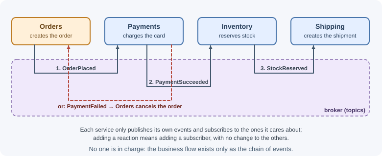
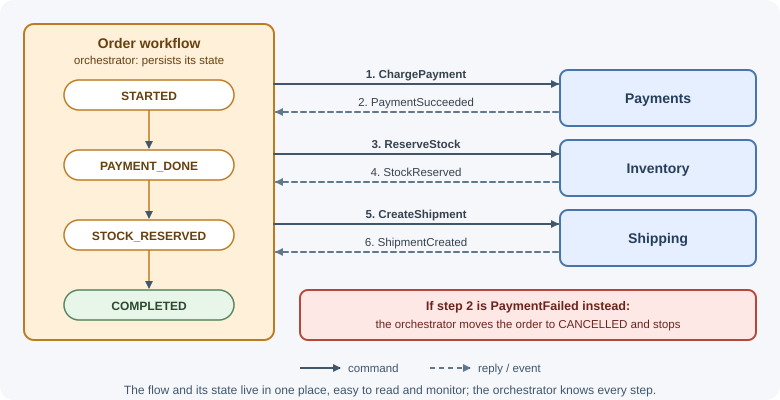
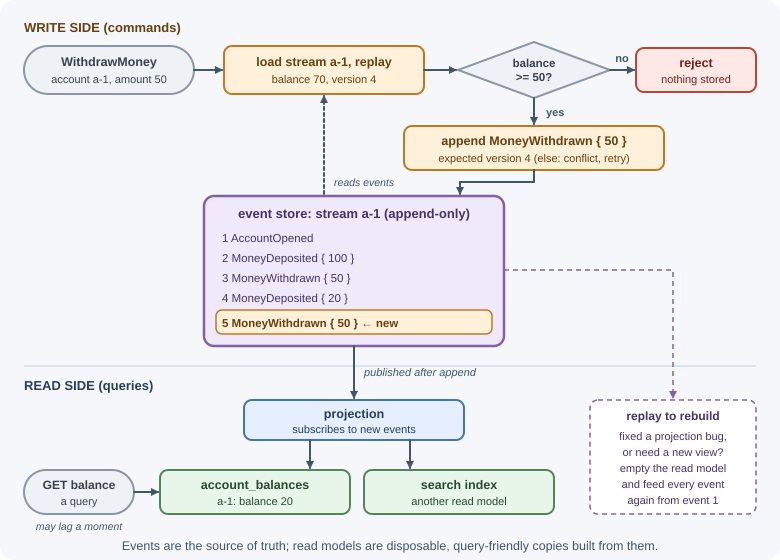

Event-Driven Architecture¶
In an event-driven architecture, components communicate by producing and
reacting to events—records that something happened, such as
OrderPlaced or PaymentFailed. Producers publish events without knowing
who will react; consumers subscribe to the events they care about. Related
patterns—event sourcing and CQRS—use events as the system's source of truth
and separate how data is written from how it is read.
Why it matters¶
Event-driven designs decouple parts of a system: adding a new reaction (send an SMS when an order ships) means adding a consumer, not changing the producer. They absorb load spikes through queues, let slow work happen asynchronously, and integrate many systems cleanly. They also introduce eventual consistency, harder debugging, and schema evolution problems. Knowing both sides lets you use events where they help and avoid them where a simple function call is better.
Real-world usage¶
- The New York Times — a log as the source of truth. The Times appends all published content to a Kafka topic in chronological order and makes that log the source of truth; consumers such as search and personalization read it and reprocess content when their schemas or algorithms change (NYT Open).
- Segment — queues between ingestion and delivery. Segment's data infrastructure ingests hundreds of thousands of events per second; its API forwarded events to a distributed message queue from which they were delivered to more than a hundred types of destinations (Segment blog).
- Zalando — an in-house event bus. Zalando built Nakadi, a distributed event bus broker with a RESTful API on top of Kafka-like queues; the project is now archived because its use was internal to Zalando (Nakadi on GitHub).
Popular tools and providers: Apache Kafka, RabbitMQ, Amazon SNS/SQS and EventBridge, Azure Service Bus and Event Grid; Debezium for change data capture; the CloudEvents specification for event envelopes.
How it works¶
Events, commands, and queries¶
| Message | Meaning | Naming | Receivers | Can be rejected? |
|---|---|---|---|---|
| Command | A request to do something | Imperative: PlaceOrder, ChargeCard |
Exactly one handler | Yes |
| Event | A fact that something happened | Past tense: OrderPlaced, CardCharged |
Zero or more subscribers | No—it already happened |
| Query | A request for information | GetOrderStatus |
One handler | Returns data, changes nothing |
A command expresses intent and expects someone to act on it. An event announces a fact; the producer does not care who listens or whether anyone does.
Event notification versus event-carried state transfer¶
Events can carry very different amounts of data:
- Event notification: the event says that something changed and includes minimal data, often just IDs.
{ "type": "CustomerAddressChanged", "customerId": "c-42" }
Consumers that need details call the producer's API. Events stay small and the producer remains the source of truth, but consumers depend on the producer being available, and a burst of events can produce a burst of API calls.
- Event-carried state transfer: the event includes the data consumers need.
{
"type": "CustomerAddressChanged",
"customerId": "c-42",
"address": { "line1": "12 High St", "city": "Pune", "postalCode": "411001" }
}
Consumers keep a local copy and never need to call back, which improves resilience and latency. The cost is larger events, duplicated data, and consumers that may briefly hold stale copies.
Publish/subscribe through a broker¶
Events usually travel through a message broker such as RabbitMQ, Apache Kafka, or a cloud service (Amazon SNS/SQS, EventBridge). The broker stores events durably and delivers them to each subscriber, so producers and consumers do not need to be online at the same time.
┌──► [ Email service ] sends confirmation
[ Orders service ] ─────┤
publishes ├──► [ Inventory service ] reserves stock
OrderPlaced ──► (broker / topic)
├──► [ Analytics ] updates dashboards
└──► [ Loyalty service ] adds points (added later,
no change to Orders)
Delivery is usually at least once, so consumers must be idempotent and tolerate duplicates and out-of-order events. Broker details, delivery guarantees, and consumer patterns are covered in messaging fundamentals, delivery guarantees, and messaging patterns.
Choreography versus orchestration¶
A business process that spans several services can be coordinated in two ways.
Choreography: each service reacts to events and publishes its own; no one is in charge.

Orchestration: a central orchestrator tells each service what to do (with commands) and tracks the state of the process.

| Choreography | Orchestration | |
|---|---|---|
| Coupling | Very loose; services only know events | Orchestrator knows every step |
| Visibility of the flow | Spread across services; hard to see the whole process | In one place; easy to read and monitor |
| Adding a step | Add a subscriber | Change the orchestrator |
| Risk | Cyclic dependencies, "who handles failure?" | Orchestrator becomes a bottleneck or god service |
| Good for | Simple flows, independent reactions | Complex multi-step processes with compensations |
Both are used to implement sagas; see microservices patterns.
Eventual consistency¶
When a service reacts to an event asynchronously, its data catches up a little later than the producer's. For a short time, different parts of the system disagree—the order exists but the loyalty points have not appeared yet. This is eventual consistency: if no new updates occur, all copies eventually converge.
Designing for it means:
- Showing users accurate states such as "payment processing" instead of pretending everything happened instantly.
- Making operations idempotent so retries and duplicates are safe.
- Handling events that arrive out of order (for example, using version numbers or timestamps per entity).
- Accepting that cross-service queries may see slightly stale data.
See consistency and the CAP theorem.
Event schemas and versioning¶
Events are a contract between teams that may deploy at different times. A common shape is an envelope with metadata plus a payload:
{
"id": "6f1c2a9e-4b1d-4d3e-9a51-2f8f0c1e7b20",
"type": "order.placed",
"version": 2,
"source": "orders-service",
"occurredAt": "2026-11-07T10:15:30Z",
"data": {
"orderId": "o-981",
"customerId": "c-42",
"totalCents": 4599,
"currency": "INR"
}
}
- The
idlets consumers deduplicate. - The
typeandversionlet consumers interpret the payload. - The CloudEvents specification standardizes envelope fields like these.
Evolving schemas safely:
- Backward-compatible changes are fine: adding an optional field.
- Breaking changes—renaming or removing fields, changing types or
meaning—need a new version (
order.placedv3), and producers often publish both versions until all consumers migrate. - Consumers should ignore unknown fields (tolerant reader).
- Teams often use a schema registry (with JSON Schema, Avro, or Protobuf) to validate events and check compatibility automatically.
Event sourcing¶
In most systems the database stores current state: the account balance is 70. With event sourcing, the system stores the sequence of events that led to the state, and the current state is derived by replaying them.
Event store (append-only, per account)
1. AccountOpened { accountId: "a-1" }
2. MoneyDeposited { amount: 100 }
3. MoneyWithdrawn { amount: 50 }
4. MoneyDeposited { amount: 20 }
Current state = replay(1..4) → balance 70
Key ideas:
- Append-only: events are never updated or deleted; corrections are new
events (
DepositReversed). - Replay: rebuild state at any point in time, or rebuild a read model after fixing a bug.
- Snapshots: for long streams, periodically store the computed state (for example, every 100 events) and replay only the events after it.
- Projections: consumers turn events into query-friendly read models
(an
account_balancestable, a search index). - Optimistic concurrency: appending checks the expected stream version, so two concurrent writers cannot both succeed.
Benefits: a complete audit trail, the ability to answer "what was the state on March 3?", and easy creation of new read models. Costs: a different programming model, event schema evolution forever, more complex queries, and handling personal data deletion in an immutable log.
CQRS¶
Command Query Responsibility Segregation separates the model used to change data (commands) from the model used to read it (queries).

- The write side enforces business rules on a normalized model or aggregates.
- The read side serves precomputed, denormalized views—fast and simple to query.
- Read models are updated from events, so they are eventually consistent.
CQRS is often combined with event sourcing but does not require it; a simple form is reading from a replica or a separate reporting table. Use it when read and write needs differ greatly (complex domain rules but simple, high-volume reads), not by default.
Change data capture¶
Events can also be produced from database changes. Change data capture (CDC) reads the database's change log and publishes changes as events. MongoDB exposes this through change streams; tools such as Debezium do it for relational databases. CDC is a practical way to emit events from a system that was not built for them.
When to use and when not to use¶
Use events when:
- Several independent reactions follow one occurrence, and more will be added later.
- Work can finish after the user gets a response (emails, analytics, search indexing).
- You need to absorb spikes with a queue, or integrate systems owned by different teams.
- Event sourcing: you need a full audit trail, "what was true on date X?", or new read models built from history.
Do not use them for:
- Simple request/response needs: if the caller needs the answer now ("is this coupon valid?"), make a direct call.
- Strong consistency requirements across steps that must happen atomically.
- Small systems and teams where the added infrastructure, tracing, and debugging cost outweigh decoupling benefits.
- Event sourcing for CRUD-style data with no audit or temporal needs. Martin Fowler warns that for most systems CQRS "adds risky complexity."
| Need | Direct call | Events through a broker | Event sourcing + CQRS |
|---|---|---|---|
| Answer needed immediately | Best fit | Poor fit | Poor fit |
| Many independent reactions | Caller knows everyone | Best fit | Possible |
| Survive a slow or down consumer | Caller fails too | Queue absorbs it | Queue absorbs it |
| Audit trail and history | Extra work | Partial (if events are kept) | Built in |
| Reads very different from writes | One model | One model plus copies | Best fit |
| Team new to messaging | Simplest | Moderate cost | Highest cost |
Practical examples¶
Publishing and consuming an event (idempotent consumer)¶
// orders service — publish after the order is saved
await orderRepository.save(order);
await broker.publish("order.placed", {
id: crypto.randomUUID(),
type: "order.placed",
version: 1,
occurredAt: new Date().toISOString(),
data: { orderId: order.id, customerId: order.customerId, totalCents: order.totalCents },
});
Publishing right after saving can lose the event if the process crashes in between; production systems use the transactional outbox.
// loyalty service — consume, skipping duplicates
broker.subscribe("order.placed", async (event) => {
const firstTime = await processedEvents.insertIfAbsent(event.id); // unique index on id
if (!firstTime) return; // duplicate delivery: already handled
const points = Math.floor(event.data.totalCents / 100);
await loyaltyAccounts.addPoints(event.data.customerId, points);
});
A tiny event-sourced aggregate¶
function applyEvent(state, event) {
switch (event.type) {
case "AccountOpened": return { id: event.accountId, balance: 0, version: 1 };
case "MoneyDeposited": return { ...state, balance: state.balance + event.amount, version: state.version + 1 };
case "MoneyWithdrawn": return { ...state, balance: state.balance - event.amount, version: state.version + 1 };
default: return state;
}
}
export async function withdraw(eventStore, accountId, amount) {
const events = await eventStore.readStream(accountId);
const account = events.reduce(applyEvent, null); // rebuild current state
if (!account) throw new Error("Account not found"); // empty stream
if (account.balance < amount) throw new Error("Insufficient funds"); // invariant
// Append only if nobody else wrote since we read (optimistic concurrency)
await eventStore.append(accountId, [{ type: "MoneyWithdrawn", amount }], {
expectedVersion: account.version,
});
}
Best practices¶
- Name events in the past tense using the business language; keep commands and events distinct.
- Choose deliberately between notification and state-transfer events.
- Include an event ID, type, version, and timestamp in every event.
- Make every consumer idempotent and tolerant of reordering.
- Evolve schemas compatibly; version breaking changes and support both during migration.
- Use orchestration for complex, multi-step processes with compensation; choreography for simple, independent reactions.
- Invest in observability: correlation IDs carried through events and distributed tracing.
- Adopt event sourcing and CQRS only where their benefits are needed.
In production¶
- Consumer lag. Symptom: read models, search results, or dashboards fall minutes or hours behind. Detect: consumer lag (unprocessed messages or offset distance) grows steadily. Cause: consumers too slow or too few for the event rate. Fix: scale consumers or partitions, batch work, and alert on lag before users notice.
- A poison message blocks the queue. Symptom: processing stalls, and one message is retried over and over. Detect: the same message ID appears repeatedly in error logs. Cause: a message that can never be processed, such as malformed data. Fix: cap retries and move failures to a dead-letter queue for inspection.
- Duplicate side effects. Symptom: customers get two emails or double points. Detect: duplicate records with the same event ID. Cause: at-least-once delivery with a non-idempotent consumer. Fix: record processed event IDs, as the loyalty consumer above does.
- Old events overwrite new data. Symptom: a customer's address flips back to an old value. Detect: the stored version is older than one already seen. Cause: events for one entity arrived out of order. Fix: carry a version or sequence number per entity and ignore older events.
- A schema change breaks consumers. Symptom: consumers crash after a producer deploys. Detect: deserialization or validation errors spike right after the release. Cause: a renamed or removed field without a new version. Fix: additive changes only, versioned events for breaking changes, and a schema registry check in CI.
- Rebuilding a projection takes too long. Symptom: replaying events to fix a read model takes hours. Detect: replay throughput is far below the stream size. Cause: long streams with no snapshots. Fix: snapshots, and rebuild into a new table before switching reads to it.
Important terminology¶
- Event: An immutable record that something happened.
- Command: A request for a specific action, handled by one receiver.
- Event notification: A minimal event that tells consumers to fetch details.
- Event-carried state transfer: An event that carries the data consumers need.
- Choreography: Decentralized coordination through events.
- Orchestration: Central coordination by an orchestrator.
- Eventual consistency: Copies of data converge over time rather than instantly.
- Event sourcing: Storing state as an append-only sequence of events.
- Projection (read model): A view of data built from events.
- Snapshot: Stored computed state used to speed up replay.
- CQRS: Separating the write model from the read model.
- Change data capture: Producing events from database change logs.
Common mistakes and misconceptions¶
- Treating events as commands in disguise (
SendEmailRequestedaimed at one service), recreating tight coupling. - Assuming exactly-once delivery and writing non-idempotent consumers.
- Publishing an event outside the database transaction and losing it on a crash, or publishing it for a change that was rolled back.
- Breaking event schemas without versioning.
- "Event-driven means real time." It means asynchronous; latency depends on the broker and consumers.
- Adopting event sourcing everywhere, including simple CRUD data.
Revision questions¶
- What is the difference between an event, a command, and a query?
- Compare event notification and event-carried state transfer.
- When would you choose orchestration over choreography?
- How should a system and its UI handle eventual consistency?
- Explain event sourcing, snapshots, and projections.
- What problem does CQRS solve, and when is it unnecessary?